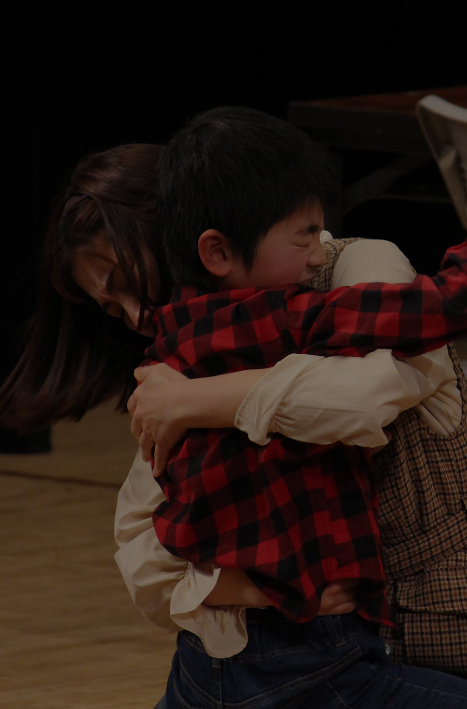
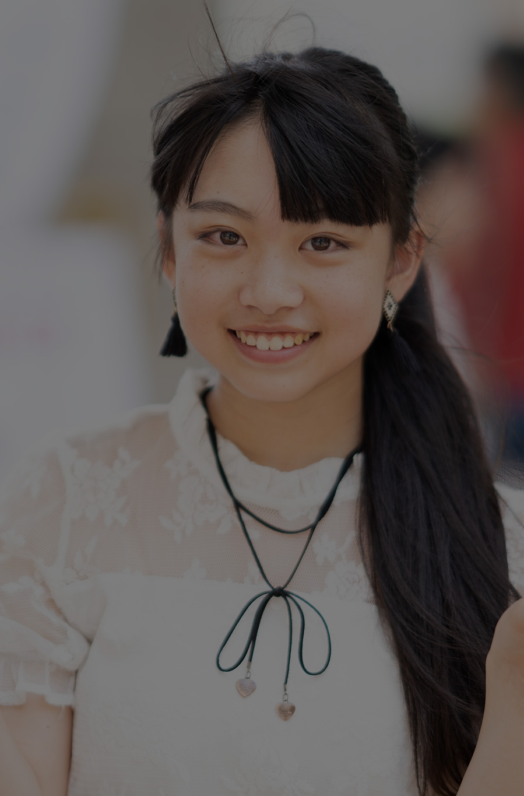
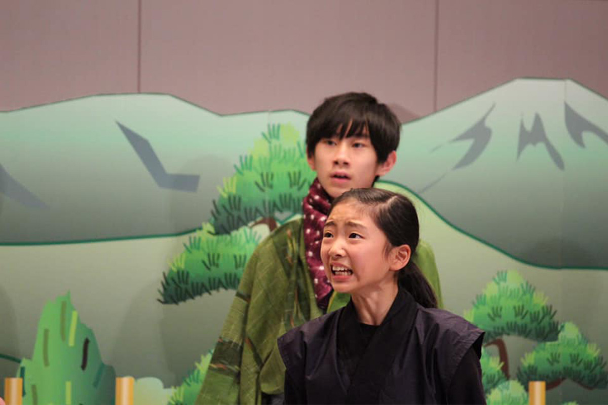
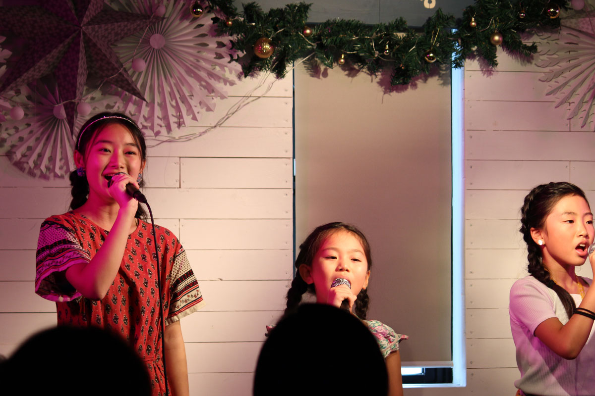
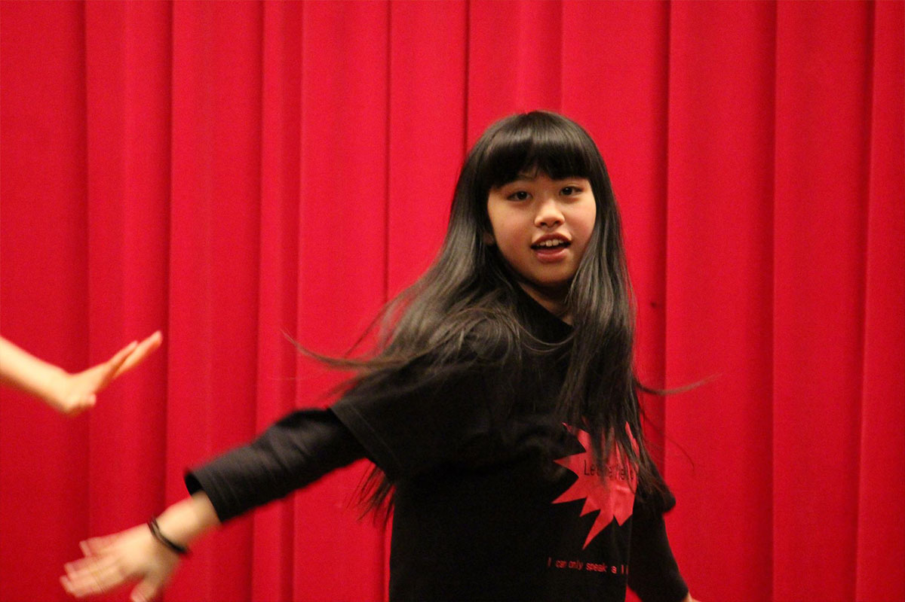
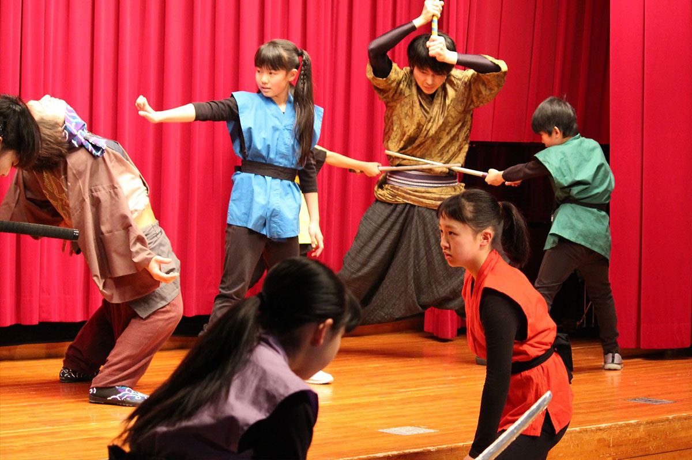
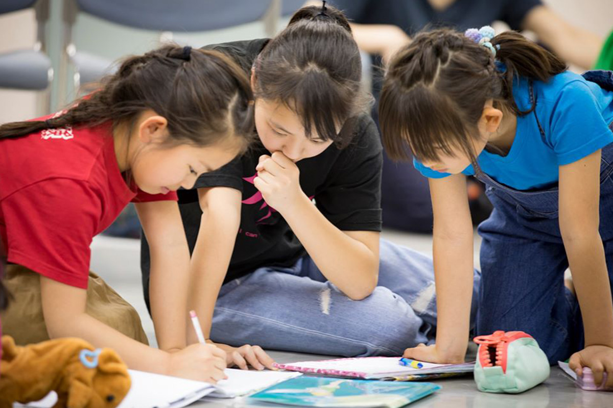

CURRICULUM
カリキュラム

将来はプロになりたい方
EXPRESSION
表現力を身につけたい方
嬉しい、楽しい、悲しい・・・自分の気持ちがうまく言えない。
日常生活は問題がないが、いざ人前に出ると緊張してしまうなど、心のうちに秘めた才能を引き出すため方にもおすすめです。滑舌や発声、言葉の組み立て方など、芸術を通して育んでいきます。また受験などでプレゼンがあるなど、対策を立てたいお子様にご参加いただけます。
PROFESSIONAL
将来はプロを目指したい方
歌も踊りも大好き!将来芸能界、ステージに立つことを目標としている、または芸術へ興味がある方もご参加いただけます。
勉強やスポーツができることも大切ですが、自分の想いや、考え方を人にしっかり伝えられること、またブレずに信念を貫ける力、芸能界で流されずやっていく力、オーディションに勝ち抜いて行く強さなどを学びます。
オーディションを受けたいけどどうしたらいいかわからない方にも最適です。
CURRICULUM
カリキュラム

ACTING
演技
発声、滑舌と基本を学び、演じることで感情表現を体得してきます。のち自己を表現したり、プレゼンなどに直結していきます。

VOCAL
ボーカル
歌の基本となる発声から、人とハモること、歌うことで心を豊かにし、ボーカルスキルをあげて自信が持てるようにします。

DANCE
ダンス
音感、リズム感、カラダを自由に使えるスキルを身に着けていきます。自己を表現する情熱的な要素もあります。

ACTION
アクション
時代劇で使う殺陣、アクションシーンなどで使う、パンチやキック、アクロバットなどの基礎となるマット運動を行います。

COMMUNICATION
コミュニケーション
他者と関わり、自己を表現していくための座学の時間です。ロールプレイング、ディベートなども行います。